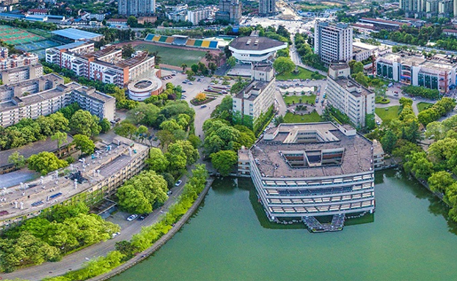

成都理工大学是国家首批“双一流”建设高校。其前身是创办于1956年的成都地质勘探学院，
是共和国建国初期的三所地质院校之一。1958年更名为成都地质学院，1993年更名为成都理工学院，
2001年更名为成都理工大学。学校先后由地质部、地质矿产部、国土资源部直属，至2000年划转地方。
学校2010年成为国土资源部与四川省人民政府共建高校，2017成为国家首轮“双一流”建设高校，
2019年成为教育部与四川省共建的“双一流”建设高校，2022年成为国家第二轮“双一流”建设高校。
学校始终秉持奉献国家、服务人民的情怀，坚守开拓创新、科技报国的本色，彰显勇挑重担、攻坚克难的担当，为国家、行业、地方建设发展积极贡献智慧与力量。以国家战略需求为导向，开展原创性引领性科技攻关，构筑大平台，组建大团队，产出大成果，把论文写在祖国的大地上，写在中华民族伟大复兴的征程中。积极参与西电东送、西气东输、南水北调、青藏铁路、川藏铁路、油气勘探、能源开发、矿产勘探、大型水电、环境保护、生态修复、新能源和新材料应用等工程建设，并在旅游与城乡规划、哲学社会科学研究、文化艺术繁荣、精准扶贫和乡村振兴等方面积极作为。成理人始终用满腔热情和实际行动，为国家强盛、社会繁荣、人民幸福贡献着成理力量。
